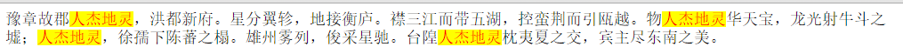

一.有字符串"This is a world of programmers."
a.获取字符串的长度
b.返回一个数组["this", "is", "a", "world", "of", "programmers."]
c.分别使用字符串方法（.slice(),.substring(),.substr()）返回"programmers";
d.分别使用字符串方法（转换成大写字母以及小写字母）
e.判断字符串里边是否有"hello","world";
f.搜索出字符串中所有的"s"的位置，并将其放进一个数组里边
二.有字符串"abcdefghiabc"; a.如何获取字符串中的第二个的字符； b.将"abc"替换成"ABC";
三.如何将字符串"豫章故郡人杰地灵，洪都新府。星分翼轸，地接衡庐。襟三江而带五湖，控蛮荆而引瓯越。物人杰地灵华天宝，龙光射牛斗之墟；人杰地灵，徐孺下陈蕃之榻。雄州雾列，俊采星驰。台隍人杰地灵枕夷夏之交，宾主尽东南之美。"中的 “人杰地灵”替换成黄底红字
如图：
四.全选反选
五.tab切换